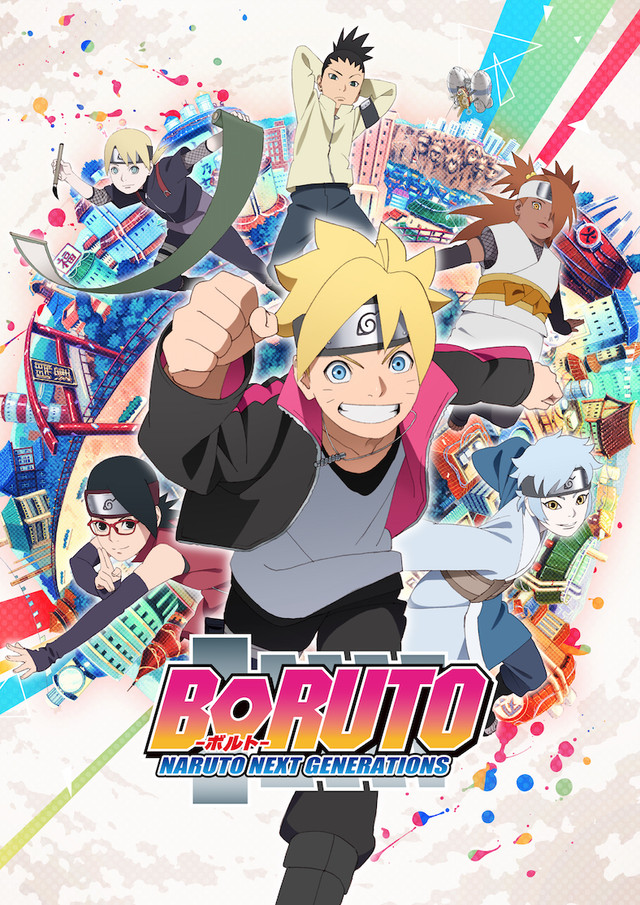
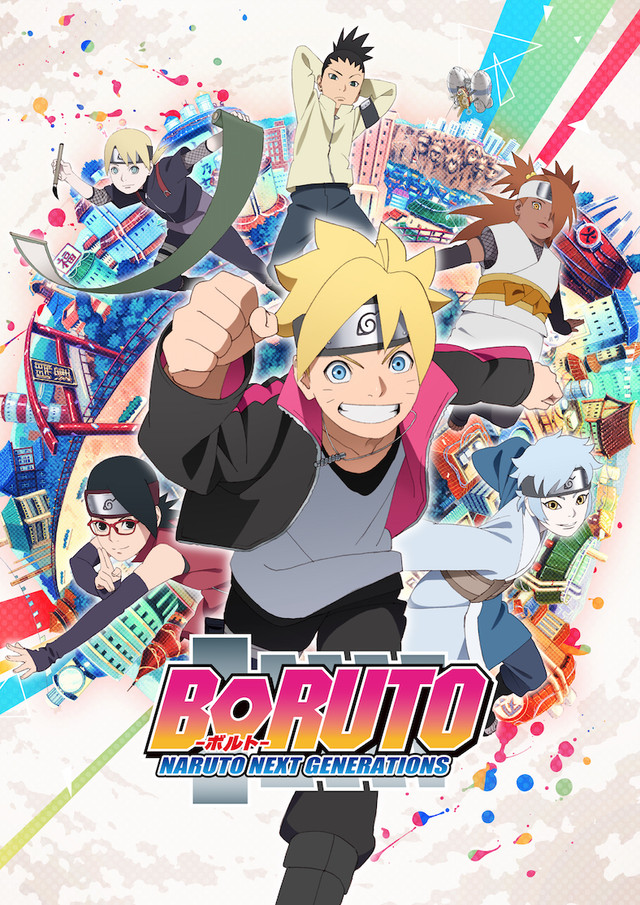
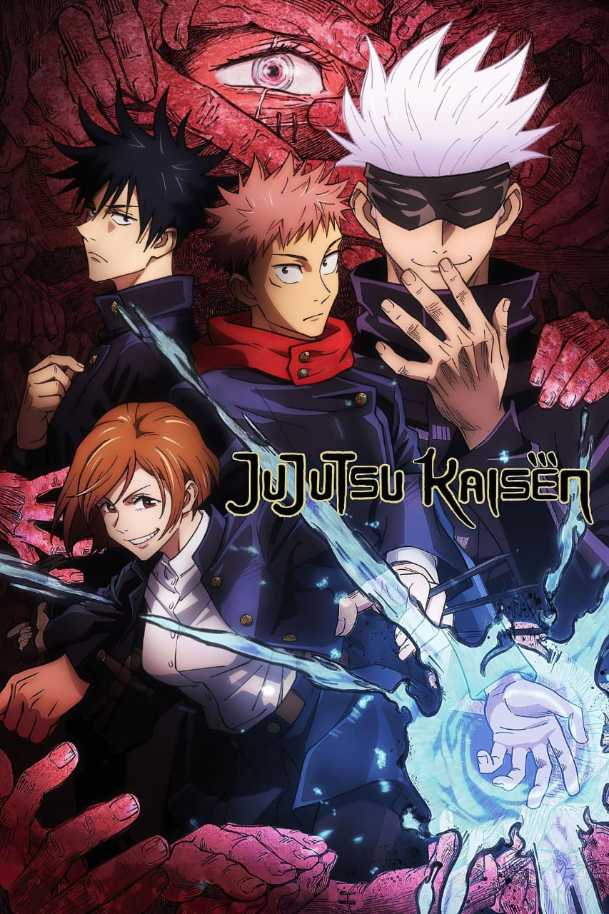

Released : 21 sep 1999
Naruto
★★★★☆
Action
Drama
Thriller
Moments prior to Naruto Uzumaki's birth, a huge demon known as the Kyuubi, the Nine-Tailed Fox,
attacked Konohagakure, the Hidden Leaf Village, and wreaked havoc. In order to put an end to the
Kyuubi's rampage, the leader of the village, the Fourth Hokage, sacrificed his life and sealed the
monstrous beast inside the newborn Naruto. Now, Naruto is a hyperactive and knuckle-headed ninja
still living in Konohagakure. Shunned because of the Kyuubi inside him, Naruto struggles to find
his place in the village, while his burning desire to become the Hokage of Konohagakure leads him
not only to some great new friends, but also some deadly foes. [Written by MAL Rewrite]
Recommanded for you
 



Naruto Shippuden
Boruto
One Piece
Demon Slayer



Jujutsu Kaisen
Death Note
Tokyo Revengers
Attack on Titan